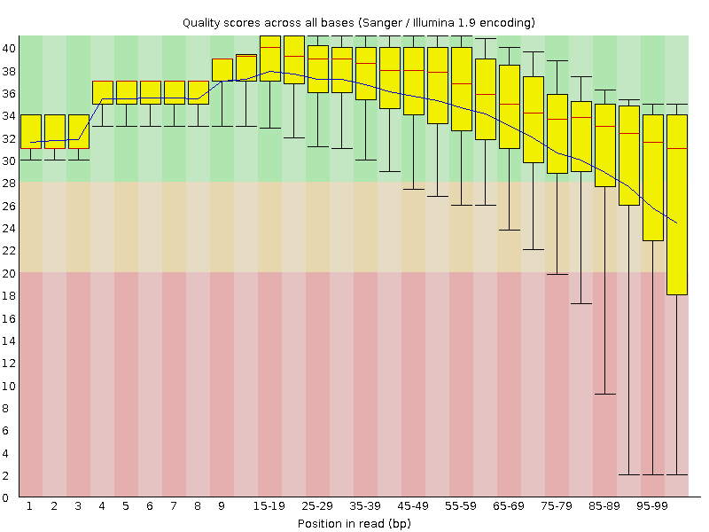
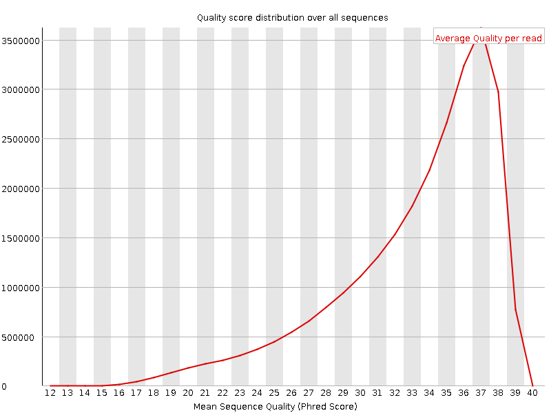
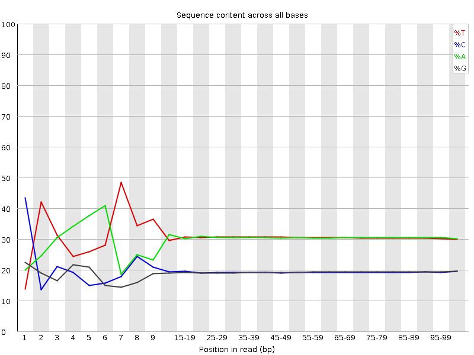
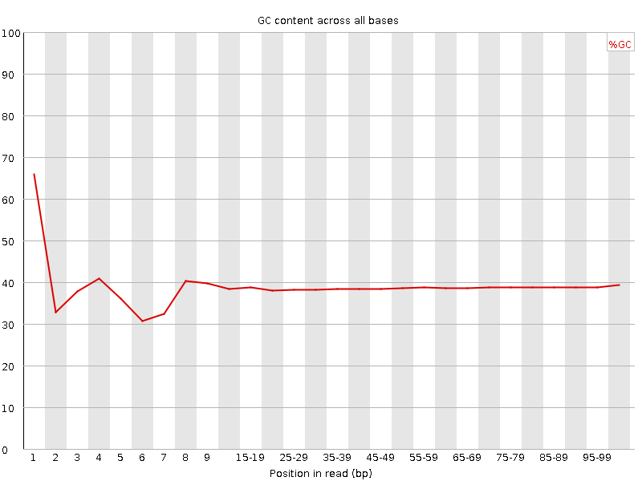
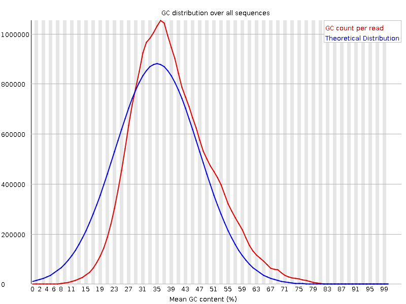
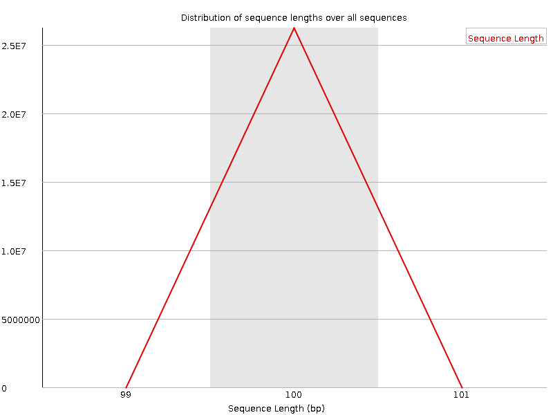
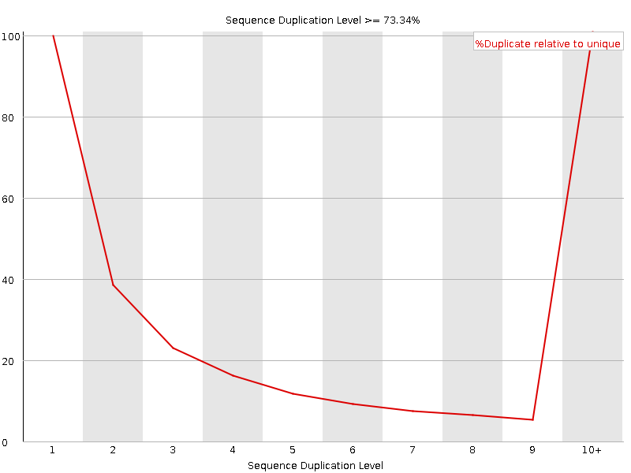
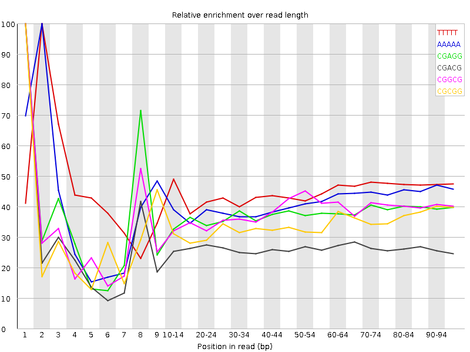

![[OK]](Icons/tick.png) Basic Statistics
Basic Statistics
| Measure | Value |
|---|---|
| Filename | c6.1.fq |
| File type | Conventional base calls |
| Encoding | Sanger / Illumina 1.9 |
| Total Sequences | 26255029 |
| Filtered Sequences | 0 |
| Sequence length | 100 |
| %GC | 38 |
Per base sequence quality

Per sequence quality scores

![[FAIL]](Icons/error.png) Per base sequence content
Per base sequence content

Per base GC content

![[WARN]](Icons/warning.png) Per sequence GC content
Per sequence GC content

Per base N content

Sequence Length Distribution

Sequence Duplication Levels

Overrepresented sequences
No overrepresented sequences
Kmer Content

| Sequence | Count | Obs/Exp Overall | Obs/Exp Max | Max Obs/Exp Position |
|---|---|---|---|---|
| TTTTT | 16783655 | 2.4417076 | 5.427994 | 2 |
| AAAAA | 16172630 | 2.4412267 | 5.893546 | 2 |
| CGAGG | 2190550 | 2.0311139 | 5.3887653 | 1 |
| CGACG | 2168990 | 1.9885663 | 7.465994 | 1 |
| CGGCG | 1321285 | 1.9124587 | 5.006665 | 1 |
| CGCGG | 1198810 | 1.7351855 | 5.1150827 | 1 |
| TCGAG | 2919235 | 1.701896 | 5.1660137 | 7 |
| CTCGA | 2941720 | 1.6957691 | 8.458314 | 1 |
| CGCGA | 1788145 | 1.6394013 | 5.734201 | 1 |
| CGAGA | 2729650 | 1.6031531 | 5.4592156 | 1 |
| CTGGA | 2717195 | 1.5841079 | 6.826275 | 1 |
| CTTTT | 6761010 | 1.5468107 | 6.2422957 | 1 |
| ATCGA | 4168630 | 1.5393744 | 5.651453 | 6 |
| CGATC | 2664745 | 1.5361054 | 5.066415 | 4 |
| CTCCA | 2675640 | 1.5250865 | 5.6824574 | 1 |
| CGAAG | 2525600 | 1.4833124 | 5.3579783 | 1 |
| CTTCG | 2580940 | 1.4768596 | 5.798912 | 1 |
| CTCGT | 2548160 | 1.4581023 | 7.1787157 | 1 |
| CTCGG | 1532650 | 1.3948305 | 7.6418386 | 1 |
| CTCGC | 1548585 | 1.3935255 | 6.15534 | 1 |
| CTGGC | 1513460 | 1.3773661 | 5.03615 | 1 |
| CTTCA | 3754460 | 1.3608043 | 5.023241 | 1 |
| CGAAA | 3599810 | 1.3391664 | 5.719825 | 1 |
| GAATC | 3478705 | 1.2846017 | 5.533664 | 4 |
| CTTGG | 2154925 | 1.2470734 | 5.8894205 | 1 |
| CTTTG | 3376755 | 1.2286899 | 5.0131774 | 1 |
| AATCG | 3317980 | 1.2252499 | 5.05536 | 5 |
| CTTGA | 3326925 | 1.2195225 | 5.545579 | 1 |